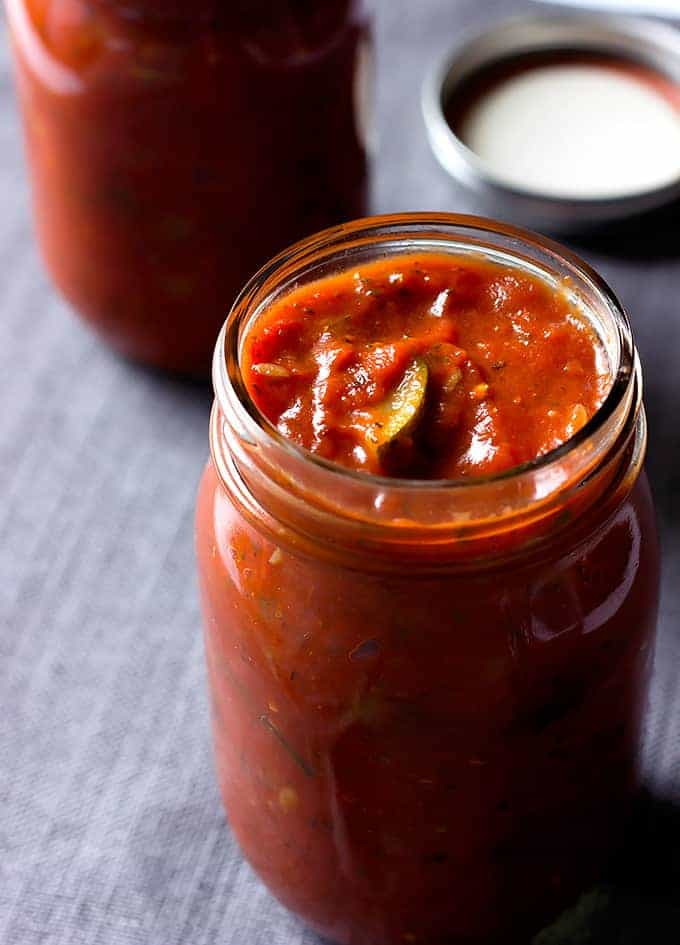

Vegetarian Spaghetti

Description
This easy to make spaghetti sauce is a great healthy alternative to
the typical meat sauce recipe. Homemade sauce taste much better than
store bought jarred sauce and will impress anyone you cook this for.
Ingredients
- 4 tbsp Olive Oil
- 1 lb. Pasta of choice
- 3 Zucchini chopped
- 6 oz sliced White Mushrooms
- 1 Yellow Onion diced
- 4 Garlic Cloves minced
- 1 (28 oz.) can Crushed Tomatoes
- 1 (15 oz.) can Tomato Sauce
- 1 (6 oz.) can Tomato Paste
- 1/4 cup freshly grated Parmasean
- 1 tbsp Brown Sugar
- 1 tbsp dried Basil Leaves
- 2 tsp dried Oregano Leaves
- 1 tbsp dried Rosamary Leaves
- Salt and Pepper to taste
Steps
- Add 2 tbsp olive oil to a large, high-sided skillet and place over
medium-high heat for 2 minutes. Add the zucchini, mushrooms, and onion.
Cook for 10 minutes, stirring occasionally.
- Add the garlic. Cook for one minute, stirring often.
- Add the crushed tomatoes, tomato sauce, tomato paste, water, sugar,
basil, oregano, rosemary, 1 tbsp olive oil, salt and pepper.
Stir to combine.
- Reduce the heat to low. Cover and simmer for one hour and a half,
stirring occasionally.
- Add parmesean cheese, cover and simmer for another 30 minutes.
- While the sauce is simmering for the last 30 minutes, bring a large
pot of water to a boil with a tbsp of olive oil and salt to taste.
- Once water is boiling add pasta, cook until al dente, about 10 minutes
depending on type of pasta used.
- Serve sauce over pasta, top with parmasean if desired.